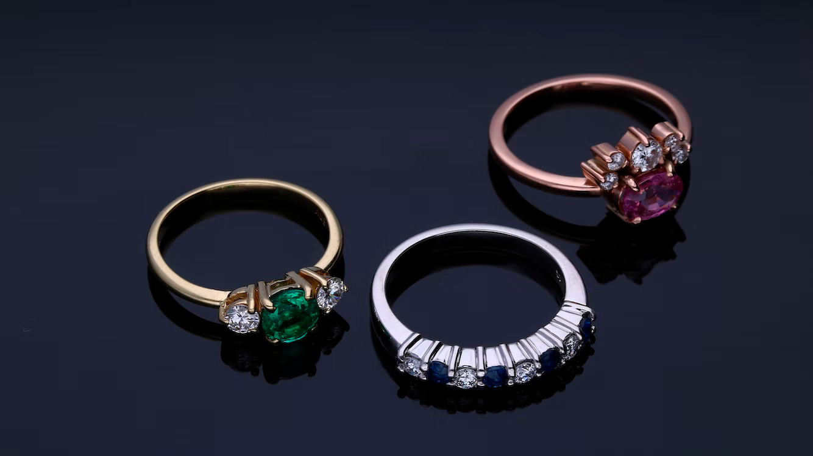

Djulla
Beyond the codes of traditional jewelry, the spirit of Djula is that of a young Parisian house that launched nearly 20 years ago- famous for its chic and urban pieces of jewelry.

Beyond the codes of traditional jewelry, the spirit of Djula is that of a young Parisian house that launched nearly 20 years ago- famous for its chic and urban pieces of jewelry.
The luxury of artisanal excellence in the goldsmith district of Valenza, the heart of the Made in Italy.
Since 2000, Marco has incorporated the traditions and virtues passed down from his father to create jewelry that embodies the luxury of Italian craftsmanship and contemporary design.